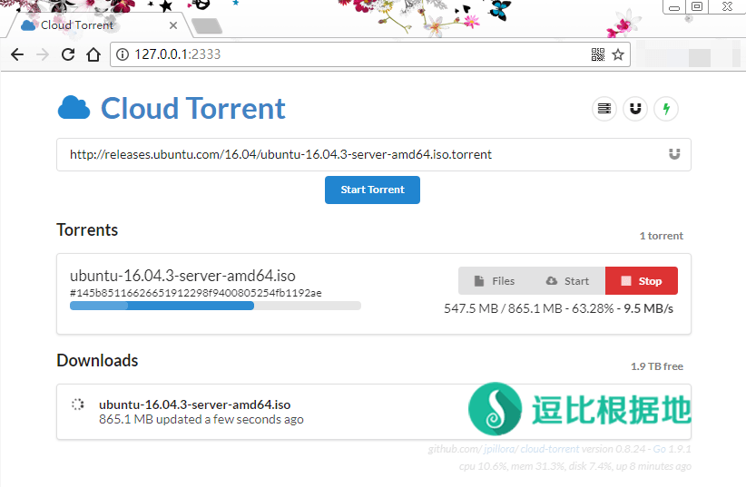

最近十年前买的老电脑终于退休了，换了个新电脑，支持64位系统了，正好可以写一下 Cloud Torrent 的Windows安装教程。
0.8.25 版本已支持上传本地BT种子功能，顶部输入框尾部有个上传按钮。

注意：Cloud Torrent 的Windows版只支持 64位系统，32位的就不要下载了！
Cloud Torrent Linux系统一键脚本：『原创』支持 BT(磁力链接)、离线下载和边下边播的老司机坐骑 —— Cloud Torrent 一键脚本
Cloud Torrent Windows 客户端：『原创』更方便的Windows系统 Cloud Torrent 客户端 —— Cloud Torrent Tools
下载解压
第一步当然是下载软件啦。、
首先访问 Cloud Torrent 的 Github - Releases ，进入后会看到一堆更新日志和下载链接。
我们选择最前面有 绿色 Latest release 标识的最新文档版本，然后点击 cloud-torrent_windows_amd64.exe.gz 下载压缩包。
下载完成后建议新建一个文件夹，例如：cloud-torrent 。
然后把下载的压缩包中的 cloud-torrent_windows_amd64.exe 文件解压到 cloud-torrent 文件夹，并重命名为：cloud-torrent.exe 。
然后我们继续下面的步骤来制作启动文件（Cloud Torrent 的 Windows 依然要通过命令行方式去运行）。
注意：虽然 Cloud Torrent Windows解压后就一个文件，但是运行后会自动生成配置文件和下载文件夹，所以为了避免混乱，新建一个文件夹放在一起是最好的。
制作脚本
首先我们在 cloud-torrent.exe 同目录下新建一个 新建文本文件.txt ，然后写入一下内容：
cloud-torrent.exe -h "0.0.0.0" -p 2333 -l pause>nul # 如果你想要用账号密码保护，那么这样写： cloud-torrent.exe -h "0.0.0.0" -p 2333 -l -a "user:passwd" pause>nul
-h "0.0.0.0" 指的是 监听本地网卡地址。
如果你的 Windows设备有公网IP（或者路由器做了端口映射），那么可以通过 公网IP:2333 来在互联网中访问你的 Cloud Torrent。
如果你是在 Windows系统的服务器上面安装，那么也会自动监听所有网卡的公网IP（可以通过公网IP访问）。
如果你只想本机访问，不想公网或者局域网访问，那么可以设置为 127.0.0.1 .
注意：当设置为 0.0.0.0 时，局域网内其他设备也能通过 该电脑内网IP:2333(例如：http://192.168.0.103:2333 ) 访问 Cloud Torrent 页面。
-p 2333 指的是 本地监听端口，可以自行修改。
-a "user:passwd" 指的是 访问账号和密码，user 代表账号，passwd 代表密码（这个选项是可选的）。
-l 指的是 输出日志。
添加保存后，我们重命名 新建文本文件.txt 为 run.bat 。
这时候我们的启动脚本已经制作完毕，双击 run.bat 脚本即可运行 Cloud Torrent，当然运行后你只能看到一个 CMD的命令行窗口，不要关闭他，打开浏览器输入 127.0.0.1:2333 即可访问你的 Cloud Torrent 页面。
使用说明
其他说明
BT和磁力链接的速度取决于 磁力链接/BT 的用户上传共享量(资源热度) 和 中心服务器的宽带质量 有关系。
这种软件在某些程度上比不上 国内的迅雷，毕竟迅雷 用户了很大共享了很多的上传速度，而且还有缓存的中心服务器，所以才会那么快。
另外，大部分BT下载软件都有个通病（除非BT软件自带DHT），那就是刚安装后下载BT速度会较慢（特别是资源热度低的），但是BT下载多了，DHT就会更完善，下载速度会更快。
启动失败，日志提示：listen tcp IP:端口: bind: address already in use
这种情况是你绑定的网页访问端口被其他程序占用，你需要去关闭占用的程序，或者修改绑定的端口。
GitHub项目地址（感谢作者）：https://github.com/jpillora/cloud-torrent
转载请超链接注明：逗比根据地 » 支持 BT、磁力链接、边下边播的老司机坐骑 —— Cloud Torrent Windows安装教程
责任声明：本站一切资源仅用作交流学习，请勿用作商业或违法行为！如造成任何后果，本站概不负责！


浏览器无法访问提示什么？
CMD里执行 netstat -aon|findstr 2333 看看是否有端口监听。
因为准确的来说 挂载谷歌硬盘就是你服务器上的挂载程序在谷歌硬盘不停上传下载文件。
才发现 Cloud Torrent 更新了，我刚刚已经在各个 Cloud Torrent 文章前面加了支持本地BT上传的提示了。
是觉得CMD的窗口一直很碍事么。那么我可以考虑写一个 简单的软件来让他后台启动、开机启动之类的。